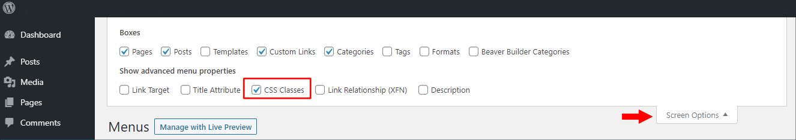

راستچین کردن منو در تم Astra برای وردپرس
راستچین کردن منو در تم Astra برای وردپرس#
پیش فرض تم Astra طوری تنظیم شده که باز کردن منوهای پایینتر از سمت راسته یعنی در اصل چپچینه. که برای زبان انگلیسی درسته ولی برای زبانهای راست به چپ مثل فارسی کار اشتباهیه.
استفاده از css جواب نمیدهد#
مشکل اینجاس که با یه direction:rtl جهت منوها درست نمیشه پس باید چیکار کرد؟
راه حل#
برای راستچین کردن منو در Astra نیازه که اول از منوی Appearance > Menus از سمت راست بالا گزینه Screen Options و CSS Classes را فعال کنید.
بعد شاخهای که میخواید منو براش از سمت چپ باز شه و در اصل راستچین شه رو انتخاب کنید. یعنی میتونید انتخاب کنید کدوم لایه از منو راستچین بشه. اگه میخواید تمام منوها راستچین بشه بالاترین منو رو انتخاب کنید و تو بخش CSS کلاس زیر رو بهش بدید.
ast-left-align-sub-menu
حالا منو ها از سمت چپ باز میشن.
فلش همچنان به سمت راست#
بعد اینکه منو به سمت چپ شد مشکل دیگه اینه که فلش منو همچنان به سمت راست اشاره میکنه. برای حل این مسئله از هر جایی که Additional CSS اضافه می کنید مثلا از منوی Astra > Customize > Additional CSS این CSS رو اضافه کنید :
#ast-desktop-header .main-header-menu .sub-menu .menu-item.menu-item-has-children>.menu-link .ast-header-navigation-arrow {
position: absolute;
right: unset;
top: 50%;
transform: translate(0, -50%) rotate(90deg);
}
.ast-desktop .site-header .sub-menu .menu-text {
float: right;
}